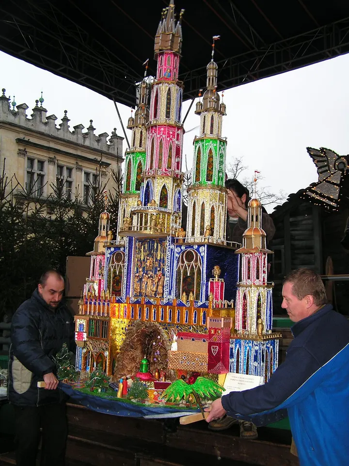
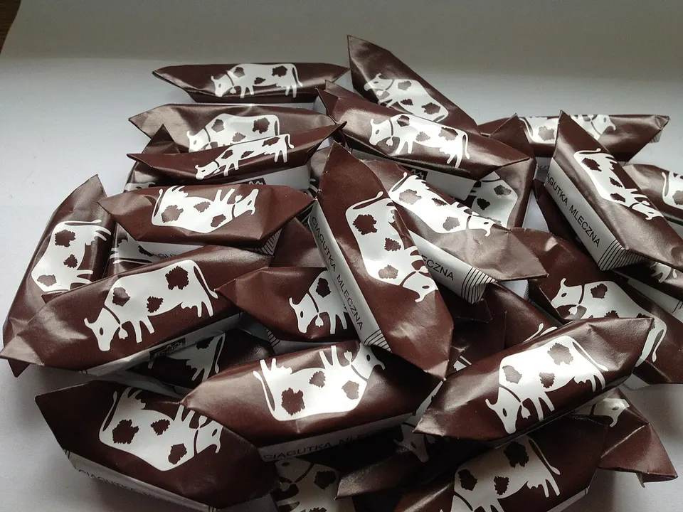
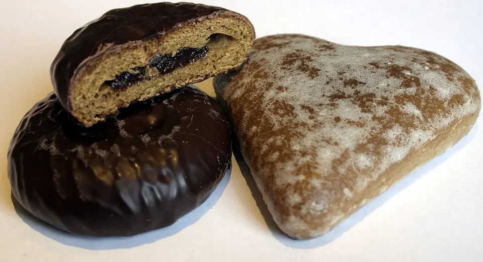
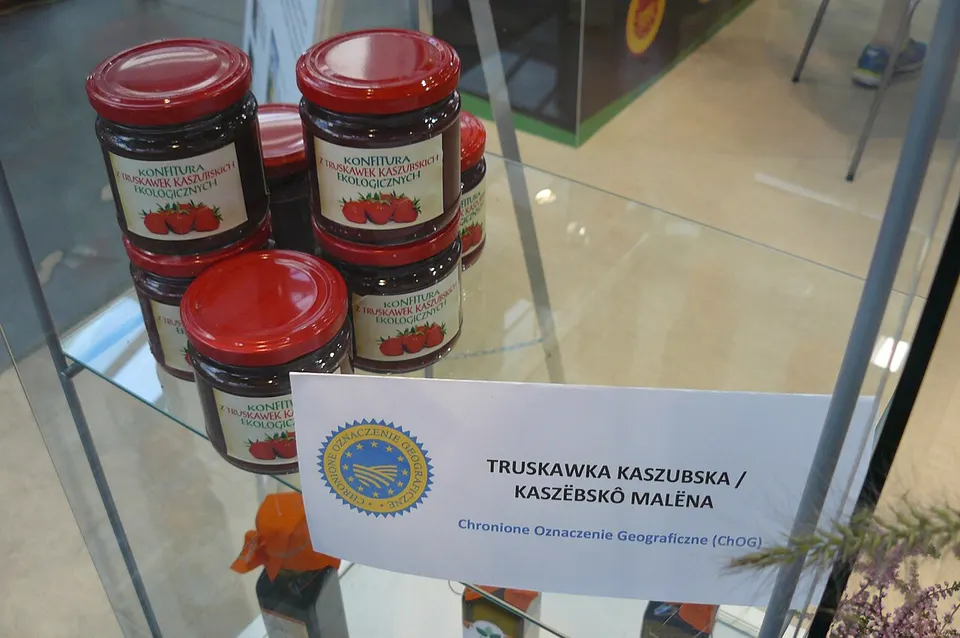

폴란드
크라쿠프 3박: 구시가지 · 소금광산 · 아우슈비츠
Kraków in 3 nights
해외 여행 가이드의 단골 "크라쿠프 3일" 일정. 하루씩 구시가지·근교 두 곳.
여행 개요


하루는 중앙 광장과 바벨성, 하루는 카지미에시와 쉰들러 공장, 하루는 아우슈비츠나 비엘리치카 소금광산을 다녀옵니다. 바르샤바 직항으로 내려 기차로 오거나 경유편으로 크라쿠프에 바로 들어갑니다.
- 방문 국가
- 폴란드
- 방문 도시
- 크라쿠프3박
- 여행 기간
- 단기 · 현지 3박 4일 인천 출발~귀국 약 5일 · 자료에서 권하는 기간 3박
- 추천 월
- 5·9·12월 아우슈비츠는 성수기에 몇 주 전 예약이 찹니다.
- 여행 성격
- 역사·건축 낭만·고풍 · 활기·도시
- 난이도
- 초보자도 무난 대중교통으로 충분
- 추천 대상
- 역사에 관심 있는 혼자 여행자
이 코스의 장점
- 물가가 낮음
- 숙소 이동 없음
알아 둘 점
- 크라쿠프 직항 없음(바르샤바 직항 + 기차 2시간 30분 가능)
지도


- 1숙박 도시(방문 순서)
- 추천 당일치기
- ✈입출국 공항
- 정기 교통편이 있는 구간
- 편수·운행 확인이 필요한 구간
지도: © OpenStreetMap 기여자
일자별 일정
현지 3박 4일 · 크라쿠프 3박
- Day 1
크라쿠프 중앙 시장 광장과 바벨
도착 인천 → 크라쿠프 공항. 도착일은 숙소 주변 위주로 가볍게.
플로리안 문 → 리네크 광장(직물회관·성 마리아 성당 나팔 소리) → 바벨 성·대성당 → 비스와 강변.
바벨 성 전시는 구역별 입장권이라 미리 고르세요.
숙박: 크라쿠프
- Day 2
크라쿠프 카지미에시와 포드구제
카지미에시 유대인 지구 → 쉰들러 공장 박물관 → 게토 영웅 광장, 저녁에는 자피에칸카와 카페.
숙박: 크라쿠프
- Day 3
크라쿠프 아우슈비츠 또는 비엘리치카
아우슈비츠-비르케나우 박물관(공식 사이트 사전 예약 필수, 왕복 포함 6~7시간) 또는 비엘리치카 소금광산(반나절).
두 곳을 하루에 묶으면 매우 벅찹니다. 하루에 한 곳을 권합니다.
숙박: 크라쿠프
- Day 4
출국 · 크라쿠프 공항
오전에 못 본 곳을 둘러보고 공항으로 이동합니다. 귀국편은 대부분 다음 날 한국에 도착합니다.
도시 간 교통
도시를 옮기지 않는 일정입니다.
국경 폴란드 한 나라 안에서만 움직입니다.
한국 출발 항공 접근성
입국 · 크라쿠프 KRK 경유
바르샤바(LOT)·헬싱키·프랑크푸르트·뮌헨·이스탄불 등에서 1회 경유. 바르샤바 직항 + 기차(약 2시간 30분)도 방법입니다.
- 왕복 항공권이라 마지막 날 출국 공항까지 돌아오는 이동 시간을 일정에 넣었습니다.
여행 팁과 주의사항
추천 월
5·9·12월
피할 시기
1~2월
월별
- 1
- 2
- 3
- 4
- 5
- 6
- 7
- 8
- 9
- 10
- 11
- 12
아우슈비츠는 성수기에 몇 주 전 예약이 찹니다.
- 아우슈비츠는 공식 사이트에서 미리 예약하세요.
- 이런 분께: 역사에 관심 있는 혼자 여행자
- 현지 통화: 폴란드 즈워티(PLN)
여행 전 확인할 공식 정보
이 루트에서 사 올 기념품
지나가는 나라마다 머무는 기간에 맞춰 골랐고, 비슷한 상품(와인끼리, 꿀끼리 등)은 하나만 넣어 10개 이내로 추렸습니다. 기간 탭을 바꾸면 도시에 맞게 다시 고릅니다.
- 사진 준비 중 폴란드 · 문화·예술·박물관폴란드 포스터 학파 복각판디자인 애호가에게 최고의 폴란드 선물 크라쿠프에서
-

폴란드 · 전통 공예·생활용품크라쿠프 시좁카크라쿠프에서만 볼 수 있는 유네스코 공예 크라쿠프에서 -
 폴란드 · 와인·전통주·음료미우트 피트니 벌꿀주이름에 등급이 붙는 전통 꿀술
크라쿠프에서
폴란드 · 와인·전통주·음료미우트 피트니 벌꿀주이름에 등급이 붙는 전통 꿀술
크라쿠프에서 -

폴란드 · 먹거리·간식크루프키 밀크 캐러멜가볍고 저렴한 나눔용 국민 사탕 크라쿠프에서 - 사진 준비 중 폴란드 · 패션·액세서리자코파네 울 슬리퍼겨울 실내화로 오래 쓰는 산악 마을 기념품 크라쿠프에서
- 사진 준비 중 폴란드 · 뷰티·향기치테리 시파키 수제 비누폴란드 로컬 천연 화장품, 고체라 휴대 편함 크라쿠프에서
- 사진 준비 중 폴란드 · 패션·액세서리카바크 디자인 양말가볍고 재미있는 디자인 선물 크라쿠프에서
-

폴란드 · 먹거리·간식토룬 진저브레드폴란드에서 가장 유명한 지역 과자 토룬 -

폴란드 · 먹거리·간식카슈비아 딸기잼그단스크 여행에서 사 올 수 있는 지역 특산 잼 카슈비아(포모제)
카드를 누르면 나라별 쇼핑·기념품 페이지에서 구매처·반입 유의사항·사진 출처를 볼 수 있습니다. 사진은 Wikimedia Commons 자유 라이선스 사진입니다.
출처
관련 콘텐츠
이 루트의 국가 페이지
비슷한 지역의 다른 루트
-

바르샤바 · 크라쿠프 폴란드 핵심
단기·중기(4~5박) · 1개국 · 추천 5·9·12월
직항으로 들어가 고속열차 2시간 30분. 폴란드의 현재와 과거를 가장 짧게 보는 코스.
-


폴란드 북부: 바르샤바 · 그단스크 · 토룬
중기(5~6박) · 1개국 · 추천 6·7·8월
발트해 한자 도시와 코페르니쿠스의 고딕 도시. 크라쿠프 대신 북쪽으로 가는 폴란드.
-


바르샤바 · 브로츠와프 · 크라쿠프
중기(6~7박) · 1개국 · 추천 6·9·12월
수도, 난쟁이의 도시, 옛 왕도를 삼각형으로 잇는 폴란드 대표 일주.
-


폴란드 종단: 크라쿠프 · 자코파네 · 브로츠와프 · 바르샤바
장기(8~10박) · 1개국 · 추천 7·8·9월
타트라 산의 호수와 온천을 넣은 열흘짜리 폴란드 완주.
정보 확인일 2026-11-21